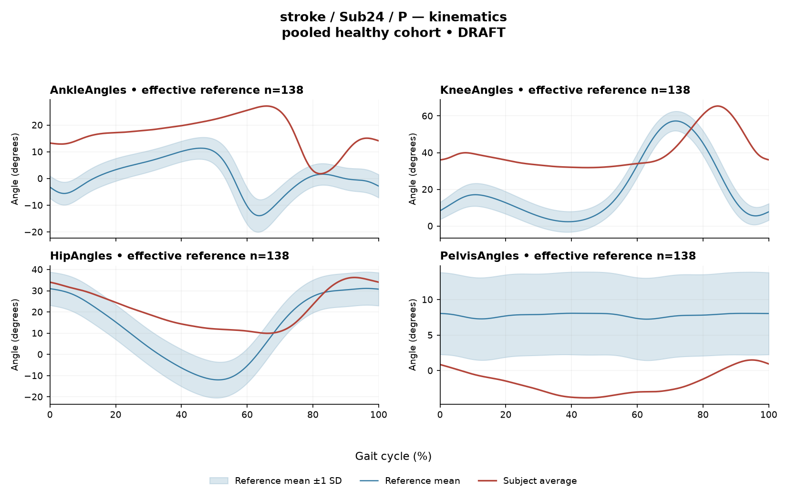

REF7434C6F8D912CE
rater3 / 10 of 150 / Case stroke_Sub24_P / Review row 11
Report: verbatim text
Text file for exact quotations# Gait Report Interpretation — Sub24_P **Version:** limited-evidence-v3.1-candidate **Scope:** Research interpretation of a supplied quantitative summary. Not a diagnosis, not a severity grading, and not a basis for treatment selection. --- ## 1. Objective Findings **Participant and side.** Sub24_P is recorded in the stroke group, and the supplied data describe the **paretic** side. The released cycle runs from one initial contact of that limb (0%) to the next initial contact of the same limb (100%); these are two successive occurrences of the same event, not a single instant. No intermediate gait event (including toe-off) and no phase boundary are supplied, so all timing below is expressed strictly as a percentage of the analysis cycle. **Spatiotemporal values as supplied.** - Gait speed **0.32 m/s**, which falls in the "household ambulator (<0.4 m/s)" speed band. This label denotes a speed band only; it does not measure walking independence, safety, or real-world community mobility. - Cadence **94.2 steps/min**. - Step length symmetry index **−11.3%**, computed with the **successive-footfall** definition (each heel at its own initial contact). By the stated sign convention, a negative value means the **paretic step is the shorter one**. The alternative instantaneous definition can yield a different value for some subjects and is not the value reported here. - Composite sagittal kinematic deviation score (**GPS-like**, RMS of the four supplied sagittal Gait Variable Scores) **17.85**. **Reference used.** Deviations are computed against **138 pooled healthy subjects**, 1001 phase points, from `main_cohort_excel`. That reference pools both body sides and all ages and is **not age- or speed-matched** to this participant. Critically, the healthy self-selected speeds span 0.80–1.79 m/s, and this participant walks at 0.32 m/s — **no speed-matched healthy reference exists in this dataset** for him. Every deviation reported below therefore conflates slow-walking effects with stroke-specific control changes, and these two contributions cannot be separated from these data. Deviations from this empirical reference should be read as differences from that reference only; on their own they do not establish a disease effect, a pathological mechanism, or a clinical diagnosis. (The same limit would apply to a control participant compared against a non-matched reference.) **Scope and channels.** - All joint angles and ROM values supplied are **sagittal plane only**; coronal and transverse channels are not included in this input. - EMG is available for seven muscles: GAS, RF, VL, BF, ST, TA, ERS, as **ensemble-averaged envelopes**. - Not supplied in this input: individual toe-off and other gait events; matched, muscle-specific normal timing references; stride-level (stride-to-stride) data; raw-signal quality checks; expert plots; non-paretic-side data; age, sex, time post-stroke, and stroke clinical scores. Items not supplied here must not be described as absent from the source release — they are simply outside this model-visible boundary. This differs from a documented absent recording, of which none is reported here. --- ## 2. EMG Envelope and Threshold Findings **How these numbers must be read.** Each curve is an ensemble average across strides, normalized to a shared maximum across available strides for that participant, side, and muscle before averaging (in the checked stroke release the denominator is participant-, side-, and muscle-specific and is **not shared between sides**). Amplitudes are therefore **relative envelope values** — not neural drive, force, or strength — and muscles cannot be ranked as stronger or weaker from them, nor compared across sides. An averaged curve also cannot show stride-to-stride variability. Above-threshold intervals are regions where the **averaged envelope** exceeds 20% of **that same curve's own peak**, with a minimum retained interval of 3% of the cycle. These are properties of the averaged envelope under this threshold-and-duration rule. They are **not** physiological onsets, offsets, burst durations, continuous contraction, or proof of inactivity outside the interval, and they do not imply that every individual stride showed the same pattern. An onset written as 0% is the analysis-window boundary. Because no toe-off or phase boundary is supplied, no interval below is assigned to stance, swing, loading, pre-swing, or push-off, and no timing is labelled early, delayed, or prolonged. | Muscle | Retained interval(s) (% cycle) | Coverage | Peak normalized amplitude | Max \|z\| vs reference (location) | |---|---|---|---|---| | GAS | 52–79 | 28% | 0.70 | 19.7 above reference, at 70% | | RF | 92–87 (wraps boundary) | 95% | 0.52 | 4.8 above reference, at 28% | | VL | 91–74 (wraps boundary) | 86% | 0.69 | 7.3 above reference, at 56% | | BF | 85–76 (wraps boundary) | 92% | 0.62 | 8.8 above reference, at 58% | | ST | 50–24 (wraps boundary) | 77% | 0.57 | 8.7 above reference, at 60% | | TA | 21–28; 30–34; 40–43; 43–49; 74–92; 95–19 (last wraps boundary) | 64% | 0.52 | 3.8 above reference, at 86% | | ERS | 0–100 | 100% | 0.70 | 7.0 above reference, at 71% | **Boundary continuity and coverage (mean-envelope level).** RF, VL, BF, ST, TA and ERS each have a retained interval that remains above its own 20% threshold across the 100%→0% cycle-defining boundary; that is, the averaged envelope does not drop below threshold at the initial-contact boundary for these six channels. GAS is the only channel whose single retained interval (52–79%) lies wholly within the cycle without crossing that boundary. For **ERS**, the supplied evidence (interval 0–100% with 100% coverage) establishes that the averaged envelope stayed above its own relative threshold throughout the whole analysis window. For the remaining channels the coverage figures are rounded (RF 95%, BF 92%, VL 86%, ST 77%, TA 64%), and a rounded coverage value does not establish that there was or was not a below-threshold segment; near-boundary rounded values are not reclassified here. **Fragmentation note (descriptive only).** TA is the only channel with multiple retained intervals — six as listed, including two reported as adjacent (40–43% and 43–49%). This is a description of how the averaged envelope crossed its own relative threshold under the stated rule; it is reported as-is without merging, and it is not interpreted as a physiological burst pattern, a clearance function, or a control abnormality. **Max |z| interpretation.** Max |z| is an **extreme-value statistic** — the largest standardized difference from the pooled reference across 1001 phase points — not a single-observation z-score, and its location is the point of largest standardized difference, **not** necessarily the time of peak envelope amplitude and not a gait event. "Above reference" means above the phase-specific reference **mean** at that location, not above a healthy percentile limit. The conventional 2-SD rule does not apply: in this dataset all 109 healthy controls with EMG exceed |z| = 2 somewhere, and per-muscle healthy 95th percentiles for this statistic run 3.65 (ERS) to 4.61 (TA), higher still under leave-one-out. Against that stated range: **TA's 3.8** lies inside the span of those percentiles and below the TA-specific 4.61. **GAS 19.7, BF 8.8, ST 8.7, VL 7.3, ERS 7.0 and RF 4.8** all exceed the upper end (4.61) of the supplied per-muscle percentile range, with GAS by far the largest. These are pooled calibration percentiles, however, not matched leave-one-out normal limits for this participant, and exceeding them does not by itself establish pathology, abnormal timing, or a mechanism — particularly given the absence of any speed-matched reference at 0.32 m/s. **Co-contraction indices.** CCI here is the Falconer–Winter index computed over the **full continuous envelopes** across the whole cycle (2 × common area / summed areas). It is a whole-cycle overlap index of normalized envelopes: it is **not** simultaneous-activation time, not muscular force, and not a phase-specific result, and it can be non-zero even when detected intervals do not overlap, because sub-threshold envelope area contributes. - **TA vs GAS = 0.49** — inside the supplied healthy interval (0.24–0.59) and above the supplied median of 0.39. - **RF vs BF = 0.78** — inside the supplied healthy interval (0.48–0.83), above the supplied median of 0.68, and numerically closer to the upper endpoint of that interval. Lying inside these intervals does not establish physiologically normal co-activation or normal muscle function, and lying outside would not establish pathological co-activation, stiffness, or impaired control. Both values depend on the normalization and envelope-processing pipeline used here, so they must not be compared with values or thresholds from other studies or algorithms. The same non-matched-reference and speed limits apply to these intervals. --- ## 3. Kinematic and Reference Comparisons **Sagittal ROM and Gait Variable Scores (as supplied).** | Channel | Sagittal ROM | GVS | |---|---|---| | Ankle | 25.3° | 19.06 | | Knee | 33.6° | 25.52 | | Hip | 26.3° | 12.92 | | Pelvis | 5.3° | 9.65 | **Composite (GPS-like) = 17.85**, the RMS of these four sagittal GVS values. This is not the validated 9-variable GPS, since only sagittal channels are provided. **Comparison with the supplied reference.** Against the composite reference distribution (median 5.1, 95th percentile 10.7), this participant's 17.85 is above both values. Among the individual channels, knee has the largest GVS (25.52), followed by ankle (19.06), hip (12.92) and pelvis (9.65); no per-joint reference values are supplied, so only the composite can be compared numerically, and the per-joint ordering is descriptive. **What these scores do and do not localize.** GVS and the GPS-like composite are **summary magnitudes of difference** from the stated pooled reference waveforms. They do not indicate the direction of the waveform difference (e.g. more flexion vs more extension), do not localize the difference to any part of the cycle, and do not identify a mechanism. ROM alone does not establish a clinical restriction in the absence of an appropriate matched comparison; the pelvic ROM of 5.3°, for example, is reported without any supplied pelvic reference range and is therefore not classified here. **Comparability limit (applies throughout).** The reference is 138 pooled healthy subjects, unmatched for age and side, and with a speed floor of 0.80 m/s that this participant's 0.32 m/s falls well below. Elevated deviation scores are accurately described as differences from this non-matched reference; they cannot be attributed wholly to stroke pathology, cannot be separated from very-slow-walking effects, and do not by themselves establish a disease effect or a clinical diagnosis. Note also that a speed falling inside an overall cohort range would not, in any case, prove that a properly matched reference subset exists. --- ## 4. Questions for Further Clinical Assessment These are open questions about what additional evidence may exist or may be obtainable; none of them presupposes that the mechanism or measurement issue in question has already been observed in these data. No treatment is recommended. 1. **Gait events:** Are individual toe-off and other event timings available in the release for this participant, so that the percentage-based intervals above could be re-expressed against his own phase boundaries rather than as raw cycle percentages? 2. **Matched reference:** Is a reference subset matched for age and, in particular, for walking speed at or near 0.32 m/s available or constructible? Would a leave-one-out formulation of the per-muscle max |z| percentiles change how the elevated values (GAS 19.7 in particular) should be read? 3. **Stride-level data:** Are single-stride envelopes or stride-level kinematics retrievable? The supplied averaged curves cannot address whether the envelope pattern was consistent across strides or driven by a subset of strides. 4. **Signal-quality review:** Has a raw-signal quality review (baseline offset, movement artefact, cross-talk between adjacent muscles, electrode placement) been performed for these channels — especially for ERS, whose averaged envelope remained above its own relative threshold for the entire analysis window, and for the six channels continuous across the cycle boundary? Could such a factor contribute to high coverage or to the magnitude of the max |z| values? 5. **Normalization:** Given that the denominator is participant-, side- and muscle-specific, is any independent amplitude reference (e.g. a separately documented reference contraction) available that would allow amplitude statements beyond relative envelope values? 6. **Contralateral and non-sagittal data:** Are non-paretic-side EMG/kinematics and coronal/transverse kinematics available for this participant, with the caveat that cross-side amplitude comparison would not be valid under the side-specific normalization described? 7. **Clinical and contextual fields:** Are age, sex, time post-stroke, stroke clinical scores, footwear/orthosis use, and assistive-device use documented for this participant in the release? Any of these could bear on how the 0.32 m/s speed and the −11.3% (successive-footfall) step-length asymmetry should be contextualized. 8. **Symmetry definition:** Would the instantaneous step-length definition yield a materially different symmetry value for this participant, and is that alternative computation available for cross-checking?
Coverage rows
| Excel row | ID | Required content | Components |
|---|---|---|---|
| 53 | R067 | Describe walking speed 0.32 m/s and that it is below the stated 0.80 m/s reference floor; no reference at this speed is supplied. | AND: displayed speed and that it lies below the 0.80 m/s reference floor, so no speed-supported healthy reference exists in this dataset. Optional: cadence, speed-band label (not a functional claim). One sentence may also serve the comparability half of G03. |
| 54 | R068 | Identify knee AND ankle as the principal sagittal joint-curve differences. Exact GVS values are optional. | AND: knee AND ankle. Stating which joint is larger is optional; asserting the reverse order is an error. Exact GVS values are optional; no waveform direction, phase or restriction is required. |
| 55 | R069 | Describe GAS envelope above its phase-specific reference mean at approximately 70% of the analysis cycle (displayed max |z| 19.7). Within each route, muscle identity AND mean-relative direction AND approximate cycle location are required. Exact max-|z| repetition is optional. | Required for each route: muscle identity AND direction relative to the phase-specific reference mean AND approximate cycle location. Optional: exact max |z| value, comparison with the supplied endpoint span (descriptive only). Prohibited: percentile classification, gait phase, physiological onset, severity. |
| 56 | R070 | Describe EITHER BF envelope above its phase-specific reference mean at approximately 58% of the analysis cycle (displayed max |z| 8.8) OR ST envelope above its phase-specific reference mean at approximately 60% of the analysis cycle (displayed max |z| 8.7) OR VL envelope above its phase-specific reference mean at approximately 56% of the analysis cycle (displayed max |z| 7.3). One complete muscle-specific route is sufficient. Within each route, muscle identity AND mean-relative direction AND approximate cycle location are required. Exact max-|z| repetition is optional. | OR: one complete route suffices. Required for each route: muscle identity AND direction relative to the phase-specific reference mean AND approximate cycle location. Optional: exact max |z| value, comparison with the supplied endpoint span (descriptive only). Prohibited: percentile classification, gait phase, physiological onset, severity. |
| 57 | R071 | Describe the GAS detected above-threshold interval as approximately 52%-79% of the cycle OR its mean-envelope above-threshold coverage as approximately 28%. One complete route suffices. | OR: (GAS AND approximate interval endpoints) OR (GAS AND approximate displayed coverage). No phase, physiological-duration or normality claim is required. |
| 58 | R072 | Describe the supplied successive-footfall step-length index -11.3% and its meaning: the paretic step is shorter. | AND: displayed index and the direction supported by its sign. Optional: formula, definition wording. Acceptable phrasing for small displayed values: "a small difference with the paretic step slightly shorter/longer" (not a cutoff). Prohibited: restating the index as a percentage shortening (E01), severity grades, whole-gait symmetry generalization (E07 issue, not an omission). |
| 59 | G03 | Express a meaningful limitation of reference comparability AND why the comparison cannot establish disease effects or clinical diagnosis; for controls it cannot establish disease or overall normality. One statement may also support a case requirement. | AND: comparability and inference limitations |
Exact system input
Saved fileDraft a research gait-report interpretation for a physical therapist or physiatrist using only the supplied quantitative summary. This is a limited-evidence interpretation task, not diagnosis or treatment selection. Rules: - Describe the participant's actual group and side, available findings, and missing channels accurately. Healthy-group membership does not prove normal physiology; deviations from an empirical reference do not by themselves establish disease. - Treat detected EMG intervals and coverage as properties of an averaged envelope under the stated threshold and duration rule. Do not convert them into physiological onset, offset, duration, continuous contraction, or inactivity outside the intervals. You may describe reported coverage, retained intervals and boundary continuity at the mean-envelope level. Do not infer the same pattern in every individual stride. Say no below-threshold segment only when the supplied evidence establishes that; a rounded coverage value or no retained interval alone does not establish it. - Individual toe-off and matched muscle-specific timing references are not supplied in this task. Use percentages of the analysis cycle. When the input explicitly identifies an initial-contact boundary, you may name that boundary or describe numerical proximity to it. Do not assign stance/swing, loading response, pre-swing, mid-stance or another event to a percentage, or substitute a conventional 60% split. Anatomical muscle actions may be named, but do not map an interval to a gait-phase function such as clearance, push-off or weight acceptance. Do not characterize timing as normal, early, delayed or prolonged without the required evidence. - Respect the supplied normalization method. Relative envelope amplitude is not strength or force, and average curves do not establish stride-to-stride variability. - Report CCI as a whole-cycle overlap index of normalized EMG envelopes. You may compare it with the supplied empirical interval or a supplied median, including proximity to an endpoint. Do not invent an unavailable median. Being within that interval does not establish physiologically normal co-activation or normal muscle function; being outside it does not establish pathological co-activation, stiffness, impaired control or a diagnosis. CCI is not simultaneous activation time, muscular force or a phase-specific result. It depends on normalization and envelope methods; do not transfer values or thresholds from other studies or algorithms. - Describe GVS and GPS-like as summary differences from the stated reference. Neither localizes waveform direction or phase; ROM alone does not establish a clinical restriction without an appropriate comparison. Do not treat pooled calibration percentiles as matched leave-one-out normal limits. - Where using a reference comparison, convey both limited comparability and the inability to establish a disease effect or clinical diagnosis from that comparison. One clear explanation per report is enough; age and speed need not be recited as separate checklist words. A speed inside an overall range does not prove that an appropriate matched reference exists. Apply these limits to controls as well. - The location of maximum |z| is the largest standardized difference from the reference, not necessarily the time of peak envelope amplitude or a gait event. Above/below reference in an EMG row means relative to the phase-specific reference mean at that location, not relative to a healthy percentile limit. - Preserve numerical direction and the displayed precision. Do not invent values, clinical severity grades, statistical significance, or unavailable reference values. Descriptive comparisons with supplied values remain allowed. Near-boundary rounded values do not justify classifying hidden unrounded values. - Clinical follow-up questions may ask whether a mechanism or measurement issue exists; do not presuppose it has already been observed. Do not recommend treatment. If EMG is unavailable, section 2 may simply state that envelope timing, amplitude and CCI cannot be assessed. Reference-only plots do not provide patient EMG. Use exactly these four sections: 1. Objective Findings 2. EMG Envelope and Threshold Findings 3. Kinematic and Reference Comparisons 4. Questions for Further Clinical Assessment
Exact case input
Saved fileCandidate interpretation version: limited-evidence-v3.1-candidate
Draft the four-section report using only this subject's supplied evidence.
Metric definitions (read before interpreting any number below):
- All joint angles and ROM values are SAGITTAL PLANE only. Coronal/transverse data are not included.
- The released EMG curves are ensemble-averaged envelopes. For each participant and recorded muscle, normalization uses a shared maximum across the available strides before averaging; individual strides are not independently rescaled to their own peaks. This pipeline uses the released mean curves without further amplitude normalization. In the checked stroke release, the denominator is participant-, side-, and muscle-specific; it is not shared between sides. The local array audit verified 614 evaluable combinations, not all 700; 86 lacked valid nonzero paired samples. Amplitudes are relative envelope values, not absolute neural activation, force, or strength. Do not rank muscles as stronger or weaker from these amplitudes, or infer stride-to-stride variability from an average curve.
- Above-threshold intervals are the regions where the averaged envelope exceeds 20% of that curve's own peak, minimum retained interval 3% of the cycle (by sample count). An interval written as (X%-Y%) with X > Y wraps across the 100%->0% cycle boundary (envelope remains above threshold across the cycle-defining event). An onset of 0% is the analysis-window boundary, not necessarily a physiological onset. "No interval detected" means no region met the threshold + duration criteria; it does NOT mean the muscle is inactive or non-functional.
- CCI is the Falconer-Winter co-contraction index computed on the full continuous envelopes (2*common area / summed areas), so it can be non-zero even when the DETECTED burst intervals of the pair do not overlap (sub-threshold activity contributes).
- The composite kinematic deviation score is the RMS of the per-joint Gait Variable Scores over the sagittal channels provided ("GPS-like", not the validated 9-variable GPS).
- Step length symmetry index: 200*(paretic - non-paretic)/(paretic + non-paretic), in %. NEGATIVE means the paretic-side step is SHORTER. Two operational step-length definitions exist (successive-footfall: each heel's position at its own initial contact; instantaneous: both heels at the same instant) and give different values for some subjects -- the definition actually used is stated next to the symmetry value.
- "Max |z| deviation" is the LARGEST absolute z-score across all 1001 phase points of the cycle, comparing this curve to the healthy-cohort mean/SD at each phase. This is an extreme-value statistic, NOT a single-observation z-score: in this dataset every one of 109 healthy controls exceeds |z| = 2 on at least one muscle, and per-muscle healthy 95th percentiles for this statistic run 3.65 (ERS) to 4.61 (TA) -- higher still under leave-one-out. Do not label a value abnormal by the conventional 2-SD rule; use the healthy reference range given per muscle where provided.
- Healthy-cohort CCI reference (this dataset): RF-vs-BF median 0.68 (2.5th-97.5th pct 0.48-0.83); TA-vs-GAS median 0.39 (0.24-0.59). Composite score reference: median 5.1, 95th percentile 10.7.
- COHORT BACKGROUND (calibration context, not necessarily the exact reference used for this subject -- the actual reference composition is stated in a dedicated line with the subject data below): the full healthy cohort is 138 subjects for kinematics, effective n = 106-109 per muscle for EMG (29 controls have no usable EMG; completeness varies by age), pooling both body sides and all ages; it is not age- or speed-matched to this subject. A leave-one-out run uses one subject fewer than these counts.
- SPEED SUPPORT LIMIT (applies to most stroke subjects in this dataset): the healthy reference cohort's self-selected walking speeds span 0.80-1.79 m/s. If this subject's gait speed is below 0.80 m/s, NO speed-matched healthy reference exists in this dataset -- 41 of the 50 stroke subjects are below that floor. Deviations from the reference then conflate slow-walking effects with stroke-specific control changes, and the two cannot be separated from these data. Describe deviations from the reference as such; do not attribute them wholly to stroke pathology.
- Additional source fields are outside this input. Age, sex and gait events may be available in the release; time post-stroke, stroke clinical scores and a non-paretic-side designation apply only to the stroke cohort, as applicable. Do not claim every listed field exists for every participant. Distinguish not supplied, not applicable and documented absent recordings.
The released paretic-side cycle runs from initial contact of that limb at 0% to its next initial contact at 100%. The cycle boundary may be called initial contact; the endpoints are successive occurrences, not one instant. No intermediate event or phase boundary is supplied.
Model-visible information boundary: the summary contains mean-curve metrics and algorithm-detected intervals, not individual toe-off, matched normal muscle timing, stride-level variability, raw-signal quality checks, or expert plots. Information not supplied here must not be described as absent from the source dataset. Gait-cycle percentages alone do not identify gait phases.
Subject: Sub24_P (group: stroke, affected side: paretic)
Gait speed: 0.32 m/s (household ambulator (<0.4 m/s)) [The ambulation label denotes a speed band only, not measured walking independence, safety or real-world community mobility.]
Cadence: 94.2 steps/min
Step length symmetry index: -11.3% (step-length definition: successive_footfall)
Composite kinematic deviation score (GPS-like): 17.85
Deviation reference actually used for this subject: 138 healthy subjects (pooled), 1001 phase points, source: main_cohort_excel.
EMG envelope findings:
- GAS: above-threshold interval(s) 52%-79%, 28% of cycle above threshold, peak normalized amplitude 0.70, max |z| vs healthy reference: 19.7 (above reference, at 70% of cycle)
- RF: above-threshold interval(s) 92%-87% (wraps cycle boundary), 95% of cycle above threshold, above threshold across cycle boundary, peak normalized amplitude 0.52, max |z| vs healthy reference: 4.8 (above reference, at 28% of cycle)
- VL: above-threshold interval(s) 91%-74% (wraps cycle boundary), 86% of cycle above threshold, above threshold across cycle boundary, peak normalized amplitude 0.69, max |z| vs healthy reference: 7.3 (above reference, at 56% of cycle)
- BF: above-threshold interval(s) 85%-76% (wraps cycle boundary), 92% of cycle above threshold, above threshold across cycle boundary, peak normalized amplitude 0.62, max |z| vs healthy reference: 8.8 (above reference, at 58% of cycle)
- ST: above-threshold interval(s) 50%-24% (wraps cycle boundary), 77% of cycle above threshold, above threshold across cycle boundary, peak normalized amplitude 0.57, max |z| vs healthy reference: 8.7 (above reference, at 60% of cycle)
- TA: above-threshold interval(s) 21%-28%; 30%-34%; 40%-43%; 43%-49%; 74%-92%; 95%-19% (wraps cycle boundary), 64% of cycle above threshold, above threshold across cycle boundary, peak normalized amplitude 0.52, max |z| vs healthy reference: 3.8 (above reference, at 86% of cycle)
- ERS: above-threshold interval(s) 0%-100%, 100% of cycle above threshold, above threshold across cycle boundary, peak normalized amplitude 0.70, max |z| vs healthy reference: 7.0 (above reference, at 71% of cycle)
Co-contraction indices:
- TA_vs_GAS: CCI = 0.49
- RF_vs_BF: CCI = 0.78
Joint kinematic findings (sagittal plane):
- AnkleAngles: range of motion 25.3 deg, Gait Variable Score 19.06
- KneeAngles: range of motion 33.6 deg, Gait Variable Score 25.52
- HipAngles: range of motion 26.3 deg, Gait Variable Score 12.92
- PelvisAngles: range of motion 5.3 deg, Gait Variable Score 9.65Reference card
Saved file# Reference context: stroke/Sub24_P Mean/SD reference: 138 controls; method pooled; exclusions: []. Effective reference counts: GAS=109, RF=108, VL=109, BF=106, ST=108, TA=107, ERS=106, AnkleAngles=138, KneeAngles=138, HipAngles=138, PelvisAngles=138. The exact system and user input files define what the model receives. The EMG and kinematic plots are supplementary expert evidence, not model inputs. The plotted mean plus/minus one SD is descriptive, not a clinical normal band. Negative lower EMG bands can result from mean minus SD; they do not imply negative recorded EMG. The max-|z| p95 span in the input is pooled calibration context. Complete muscle-specific LOO thresholds are not supplied; an appropriately indeterminate classification is allowed. Controls are excluded from their own mean/SD reference, but cohort-level calibration has prior reference-data reuse. It is not an independent matched clinical limit. GPS-like is a four-channel sagittal composite, not the validated nine-variable GPS. The pooled median/p95 background is not a matched LOO normality boundary. CCI uses continuous normalized envelopes over the whole analysis cycle. An empirical interval comparison does not establish normal muscle function. Threshold intervals and rounded coverage describe the averaged envelope. Rounded 100% coverage and one interval do not prove absence of short below-threshold gaps. Use the group-specific cycle and normalization provenance in the actual input. No individual intermediate gait events or matched normal muscle timing are supplied. Administrative age and published bilateral speed are not added to this input. Expert-visible plots do not justify requiring unseen direction, phase or morphology. For a new-case requirement, cite exact input evidence. Select clinically useful descriptive content without inferring a diagnosis or severity from rank alone.
Expert reference curves
Only text inputs were supplied to the model. Do not require curve-only findings.
EMG

Kinematics
